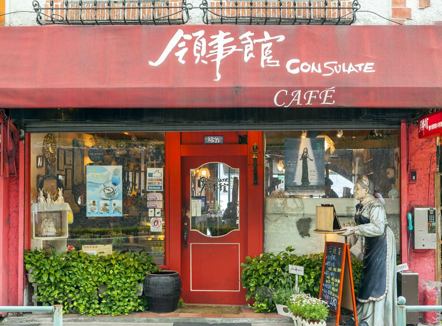

關於我們
-

淡水 領事館的故事......
在淡水區紅毛城的對面，緊鄰著淡水出海口，就有一家咖啡館以領事館為名，在這經營咖啡簡餐、地中海美食套餐，領事館餐廳座落在紅毛城對面，這也是領事館餐廳名字的由來。原本從事服裝設計的老闆，喜歡國外旅遊的她開了這間店，純為一圓自已的夢，西班牙式風格的「領事館」在淡水極負盛名，
西元１９９５年領事館正式開幕，
老闆總會利用出遊之際，蒐集各國五花八門的紀念品、民俗工藝飾品，帶回店內放置，將用餐/休憩空間點綴的琳瑯滿目、更在店中陳列她從西班牙、希臘、法國、捷克、奧地利等…各地所帶回的戰利品不藏私的與朋友分享。
威尼斯燈座，希臘的彩繪瓷磚，西班牙風味裝潢設計，彩繪瓷磚，拱門，白牆與落地窗希望讓許多人來這ㄝ有異國風情的感覺，戶外區露天咖啡座是領事館的重點，除了一樓能欣賞到美麗的淡水河風景，二樓室外陽台，更是將觀音山的美麗盡收眼底。
樓室外一張張圖案各異的馬賽克桌面，二樓區域有用來裝飾桌子的各式造型義大利通心麵組成的可愛桌面與西班牙傳統手工瓷磚畫，讓人深深感受海口小鎮的風情